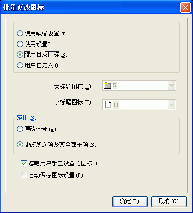

当新建或打开一个工程后，您可以通过用鼠标点击任意的目录项，然后在目录编辑区的右键弹出菜单里选取"批量更改图标..."将看到这个对话框。关于这个对话框的使用请看下面的具体描述.

使用缺省设置:
使用缺省设置2:
使用程序预设的第二类图标 -
即大标题用书的图标，小标题用文本图标。
用户自定义:
您可以子定义大标题及小标题的图标。
范围 / 更改全部:
更改目录编辑区的全部条目。
范围 / 更改当前项的所有子项:
更改目录编辑区当前项的全部子项。
忽略用户手工设置的图标:
如果用户之前调整目录项的图标为非标准的两个图标，选中则不再自动修改这些图标。
自动保存图标设置:
保存当前的图标设置以便下次使用。选中则这里的设置将取代搜索选项 -
TOC图标设置对话框里的图标设置。
| 版权所有 © 2000-2007 国华软件 保留全部权利. |